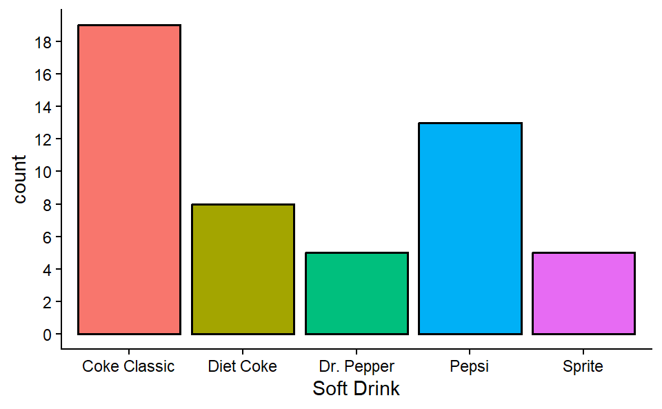
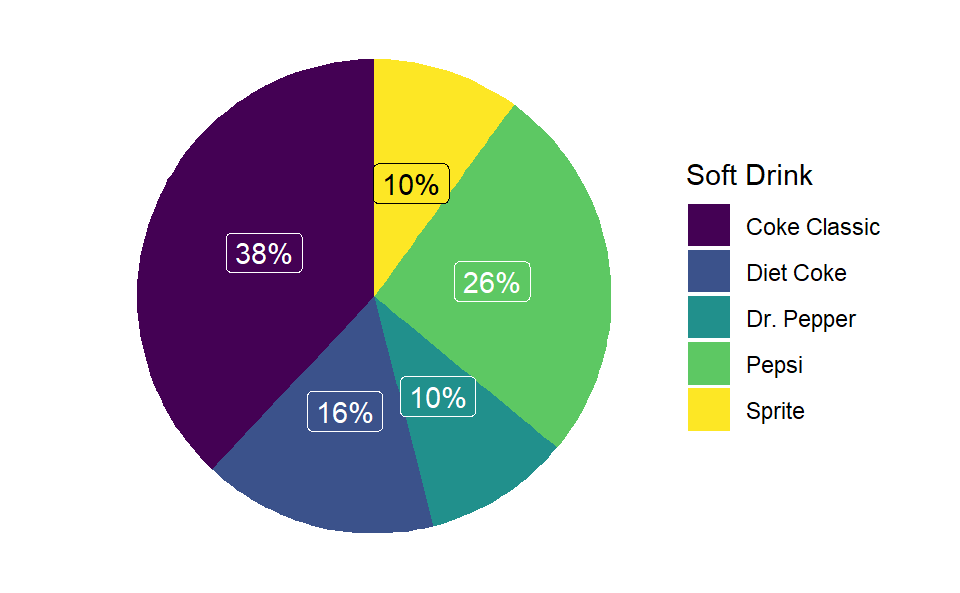
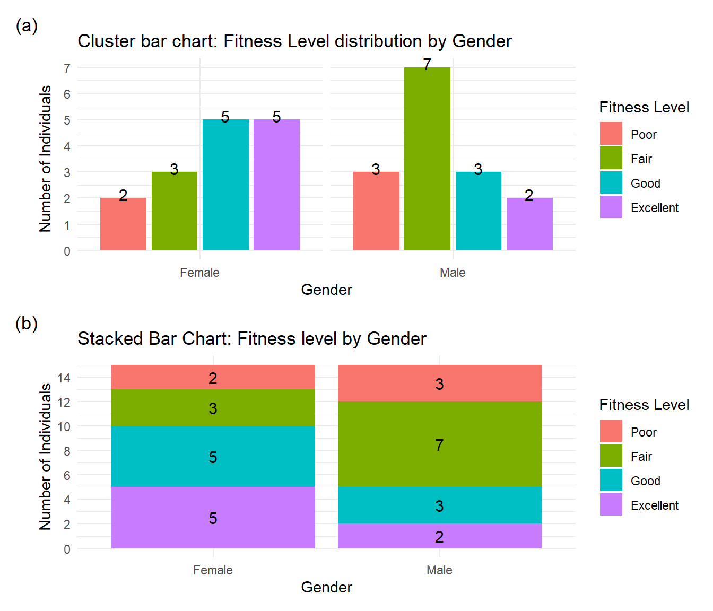
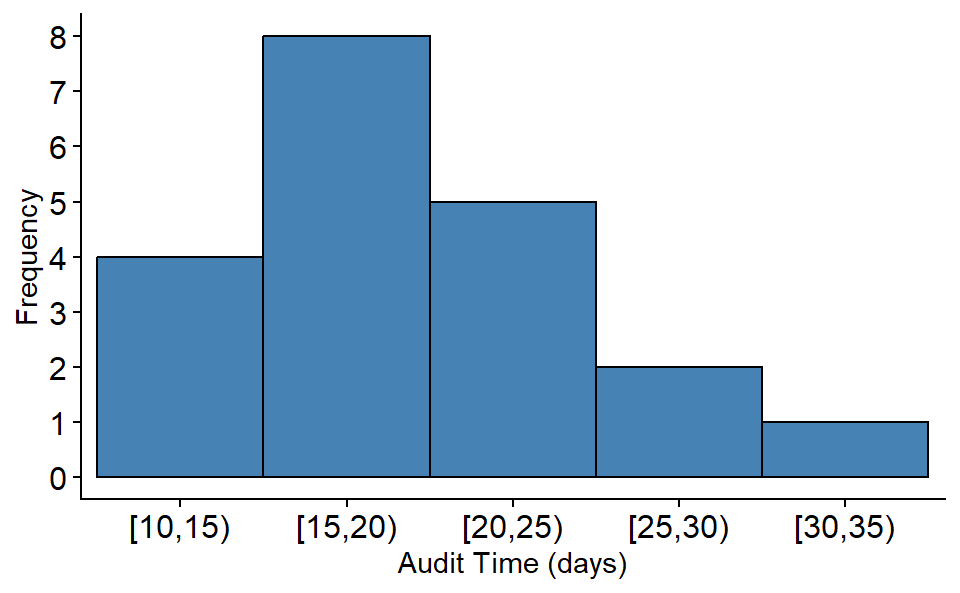
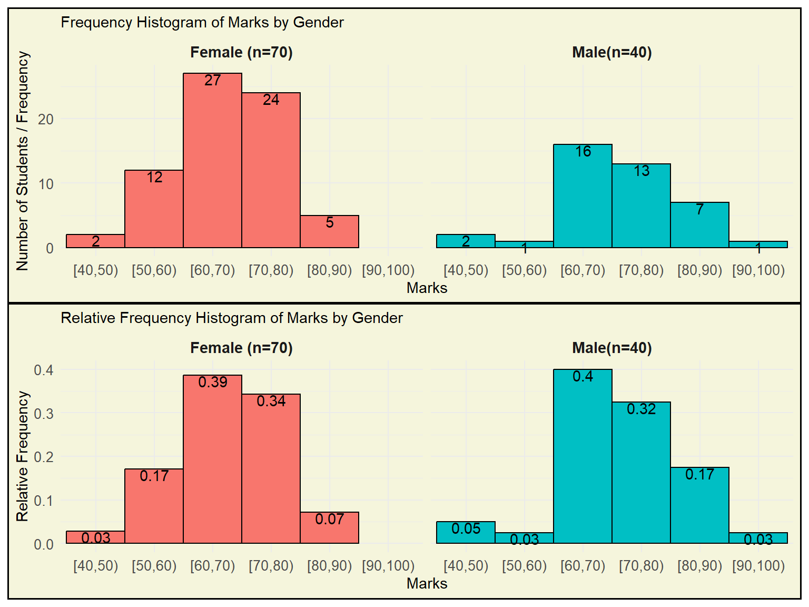
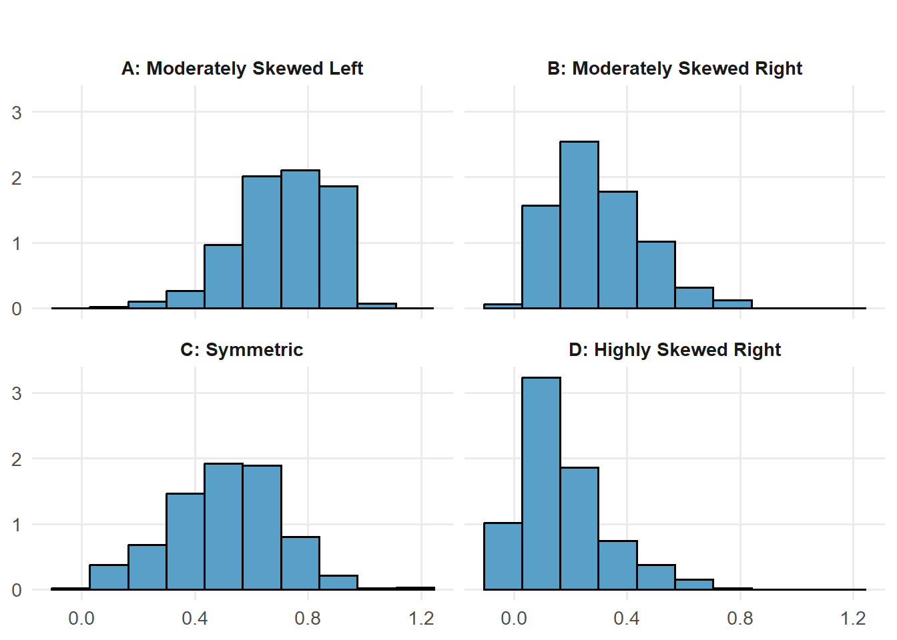
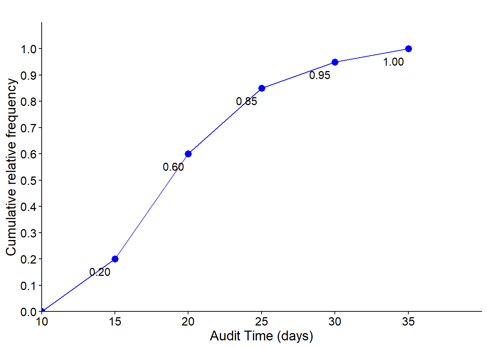
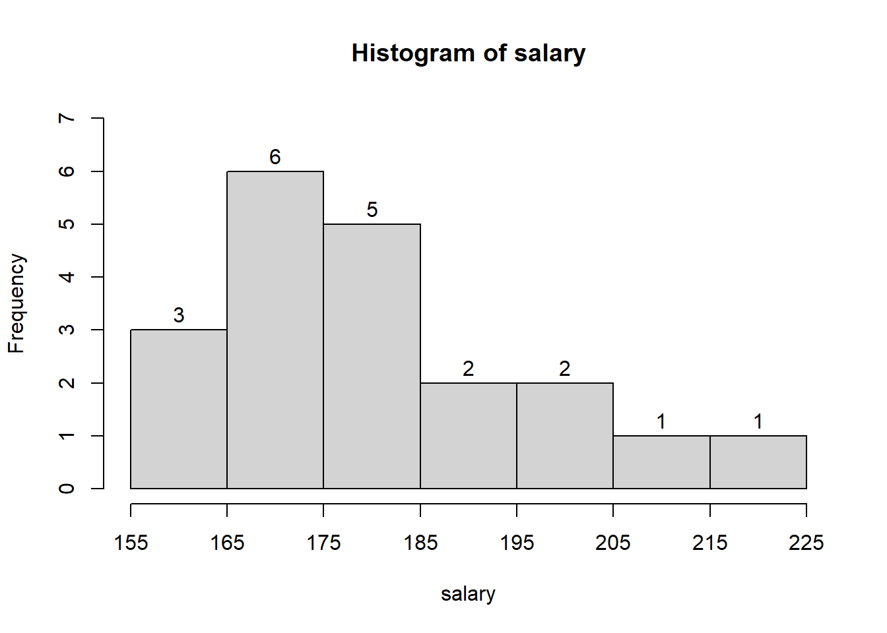
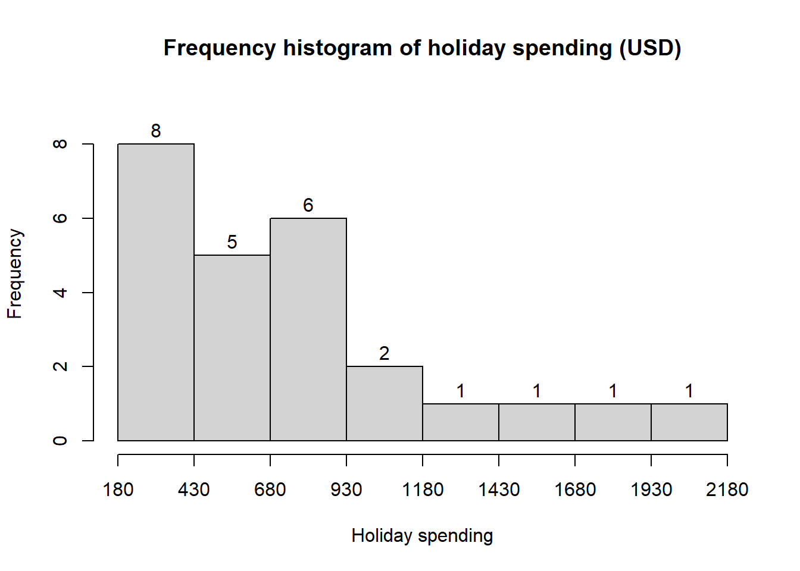

| Soft Drink | Frequency |
|---|---|
| Coke Classic | 19 |
| Diet Coke | 8 |
| Dr. Pepper | 5 |
| Pepsi | 13 |
| Sprite | 5 |
2 Descriptive statistic: Tabular and Graphical Presentations
2.1 Summarizing Categorical Data
2.1.1 Frequency Distribution
A frequency distribution is a tabular summary of data showing the number (frequency) of items in each of several non overlapping classes.
Example 2.1 Consider the following data shown in ?tbl-tbl2_1.
| Coke Classic | Coke Classic | Coke Classic |
| Diet Coke | Diet Coke | Coke Classic |
| Pepsi | Coke Classic | Pepsi |
| Diet Coke | Diet Coke | Dr. Pepper |
| Coke Classic | Coke Classic | Coke Classic |
| Coke Classic | Sprite | Diet Coke |
| Dr. Pepper | Pepsi | Pepsi |
| Diet Coke | Coke Classic | Pepsi |
| Pepsi | Coke Classic | Pepsi |
| Pepsi | Coke Classic | Pepsi |
| Coke Classic | Pepsi | Coke Classic |
| Dr. Pepper | Coke Classic | Dr. Pepper |
| Sprite | Sprite | Pepsi |
| Coke Classic | Dr. Pepper | Sprite |
| Diet Coke | Pepsi | Coke Classic |
| Coke Classic | Diet Coke | Sprite |
| Coke Classic | Pepsi |
Now we will construct a frequency distribution by simply counting each type of soft-drink.
Relative Frequency and Percent Frequency Distributions
Relative Frequency \(=\frac{Frequency \ \ of \ \ the \ \ class}{n}\)
The percent frequency of a class is the relative frequency multiplied by 100.
2.1.2 Bar Charts and Pie Charts
Bar chart: A graphical device for depicting qualitative data that have been summarized in a frequency, relative frequency, or percent frequency distribution.
Pie chart: A graphical device for presenting data summaries based on subdivision of a circle into sectors that correspond to the relative frequency for each class.
From the frequency table of soft drinks purchase, we will develop relative and percent frequency distribution (see Table 2.2) and will construct a bar-chart and pie-chart.
| Soft Drink | Frequency (f) | Relative Frequency(Rf) | Percent Frequency (Pf) |
|---|---|---|---|
| Coke Classic | 19 | 0.38 | 38 |
| Diet Coke | 8 | 0.16 | 16 |
| Dr. Pepper | 5 | 0.10 | 10 |
| Pepsi | 13 | 0.26 | 26 |
| Sprite | 5 | 0.10 | 10 |
Now we construct a bar chart and pie chart.


2.1.3 Cross-tabulation and its graphical presentation
Cross-tabulation (also known as crosstabs or contingency tables) is a fundamental data analysis technique used to examine the relationship between two or more categorical variables. For instance, consider the following cross-table between the gender and fitness-level of 30 individuals:
| Gender | Excellent | Fair | Good | Poor | Grand Total |
|---|---|---|---|---|---|
| Male | 2 | 7 | 3 | 3 | 15 |
| Female | 5 | 3 | 5 | 2 | 15 |
| Grand Total | 7 | 10 | 8 | 5 | 30 |
We can show the information of cross-tab using (a) Clustered column chart or (b) Stacked column chart (see Figure 2.3 ).

2.2 Summarizing Quantitative Data
2.2.1 Frequency Distribution of quantitative data
Consider the following data.
YEAR-END AUDIT TIMES (IN DAYS): 12, 14, 19, 18, 15, 15, 18, 17, 20, 27, 22, 23, 22, 21, 33, 28, 14, 18, 16, 13,
To construct a frequency distribution we have to
- Determine the number of non overlapping classes(k).
- Determine the width of each class.
- Determine the class limits.
2.2.2 Frequency Distribution of Audit time data
Here, \(n=20\), Smallest value=12, Largest value=33.
- Determine number of classes, \(k\) as : \(k=\sqrt n=\sqrt 20=4.47\approx5\). So \(5\) is the number of classes.
- Class width \(w\) as: \(w=\frac{Largest-Smallest}{k}=\frac{33-12}{5}=4.2\approx 5\)
- Class limits: Start from near smallest value (12) say from \(10\) we have the following classes (exclusive method-where upper bound of the class is excluded):
[10,15), [15,20), [20,25), [25,30), and [30,35)
Now count the data values in corresponding classes and thus we have the frequency distribution. Once we have the frequency distribution then we also can produce the relative and percent frequency distribution (Table 2.4 ).
| Audit Time (days) | Frequency (f) | Relative frequency (rf) | Percent frequency(pf) |
|---|---|---|---|
| [10,15) | 4 | 0.20 | 20 |
| [15,20) | 8 | 0.40 | 40 |
| [20,25) | 5 | 0.25 | 25 |
| [25,30) | 2 | 0.10 | 10 |
| [30,35) | 1 | 0.05 | 5 |
2.2.3 Histogram
A common graphical presentation of quantitative data is a histogram. This graphical summary can be prepared for data previously summarized in either a frequency, relative frequency, or percent frequency distribution.

Important Note: A relative frequency/ percent frequency histogram is ideal for comparing distributions across groups of different sizes, as it displays proportions instead of raw counts, allowing fair and meaningful comparisons.
Illustration ( see Figure 2.5)
A dataset of Marks (out of 100) was collected from two student groups:
70 Female students
40 Male students
The goal is to compare the distribution of marks between these two groups.
The frequency histogram shows how many students fall into each marks range (bin). However, since the number of female students (70) is greater than male students (40), their bars are naturally taller — even if the relative performance is similar. This makes direct comparison unfair and misleading.
A relative frequency histogram shows the proportion of students in each bin within each group. By dividing counts by the total number in the group:
It normalizes the data,
Allows for fair comparisons between groups of different sizes,
Highlights true differences in distribution, not just differences in group size.
Example Observation
From the RF histogram:
Around 40% of males scored between 50–60.
Around 39% of females scored between 50–60.
This comparison is valid only because the histograms show relative frequency, not raw counts.

2.2.4 HISTOGRAM and shape of the distribution
See Figure 2.6 .

2.2.5 Cumulative Distributions and Ogive
A variation of the frequency distribution that provides another tabular summary of quantitative data is the cumulative frequency distribution. Table 2.5 shows the cumulative relative frequency of Audit Time data.
| Audit Time (days) | Frequency (f) | Relative frequency (rf) | Cumulative relative frequency(crf) |
|---|---|---|---|
| [10,15) | 4 | 0.20 | 0.20 |
| [15,20) | 8 | 0.40 | 0.60 |
| [20,25) | 5 | 0.25 | 0.85 |
| [25,30) | 2 | 0.10 | 0.95 |
| [30,35) | 1 | 0.05 | 1.00 |
2.2.6 Ogive
Another way of presenting this information is the ogive, which is a graphical representation of the cumulative relative frequencies. Figure 2.7 is the drawn ogive for the cumulative relative frequency for Audit time data.

For instance, from both Table 2.5 and Figure 2.7 we can say (estimate) that 60% of audits took less than 20 days . Similarly, 95% of audits took less than 30 days and so on.
2.2.7 The Stem-and-Leaf Display
The techniques of exploratory data analysis consist of simple arithmetic and easy-to-draw graphs that can be used to summarize data quickly. One technique—referred to as a stem-and-leaf display—can be used to show both the rank order and shape of a data set simultaneously (Anderson and Sweeney 2011).
Steps to Construct a Stem-and-Leaf Diagram
(1) Divide each number into two parts: a stem, consisting of one or more of the leading digits, and a leaf, consisting of the remaining digit.
(2) List the stem values in a vertical column.
(3) Record the leaf for each observation beside its stem.
(4) Write the units for stems and leaves on the display.
Example 2.2 Here are the number of questions answered correctly on an aptitude test given to 50 individuals recently interviewed for a position at Haskens Manufacturing.
112, 72, 69, 97, 107,73, 92, 76, 86, 73, 126, 128, 118, 127, 124,82, 104, 132, 134, 83, 92, 108, 96, 100, 92,115, 76, 91, 102, 81, 95, 141, 81, 80, 106,84, 119, 113, 98, 75, 68, 98, 115, 106, 95,100, 85, 94, 106, 119
The decimal point is 1 digit(s) to the right of the |
6 | 89
7 | 233566
8 | 01123456
9 | 12224556788
10 | 002466678
11 | 2355899
12 | 4678
13 | 24
14 | 1Exception
In some data sets, providing more classes or stems may be desirable. One way to do this would be to modify the original stems as follows: For example, divide stem 5 into two new stems, 5L and 5U. Stem 5L has leaves 0, 1, 2, 3, and 4, and stem 5U has leaves 5, 6, 7, 8, and 9. This will double the number of original stems. However, there may be various type of data in practical situations. So, we have to figure out the suitable stem-and-leaf plot.
Example 2.3: Construct a stem-and-leaf plot from the following data:
88.5, 98.8, 89.6, 92.2, 92.7, 88.4, 87.5, 90.9, 94.7, 88.3, 90.4, 83.4, 87.9, 92.6, 87.8, 89.9, 84.3, 90.4, 91.6, 91.0
The decimal point is 1 digit(s) to the right of the |
8 | 34
8 | 888889
9 | 0000112233
9 | 59
The decimal point is at the |
82 | 4
84 | 3
86 | 589
88 | 34569
90 | 44906
92 | 267
94 | 7
96 |
98 | 8Example 2.4 (Another example): Construct a stem-and-leaf plot from the following data: 7,8,2,1,8,3,5,7,1,2,2,5,8,5,5,7,8,7,5,3
Solution:
The decimal point is at the |
1 | 00
2 | 000
3 | 00
4 |
5 | 00000
6 |
7 | 0000
8 | 00002.3 Exercises
2.1 A doctor’s office staff studied the waiting times for patients who arrive at the office with a request for emergency service. The following data with waiting times in minutes were collected over a one-month period.
2, 5, 10, 12, 4, 4, 5, 17, 11, 8, 9, 8, 12, 21, 6, 8, 7, 13, 18, 3
Use class interval/width of 5 in the following (start your class limit from 0):
- Show the frequency distribution.
- Show the relative frequency distribution.
- Show the cumulative frequency distribution.
- Show the cumulative relative frequency distribution.
- What proportion of patients needing emergency service wait less than 10 minutes or less?
2.2 A shortage of candidates has required school districts to pay higher salaries and offer extras to attract and retain school district superintendents. The following data show the annual base salary ($1000s) for superintendents in 20 districts in the greater Rochester, New York, area (The Rochester Democrat and Chronicle, February 10, 2008).
187, 184, 174, 185, 175, 172, 202, 197, 165, 208, 215, 164, 162, 172, 182, 156, 172, 175, 170, 183
Use appropriate number classes/ class width in the following.
- Show the frequency distribution.
- Show the percent frequency distribution.
- Show the cumulative percent frequency distribution.
- Develop a histogram for the annual base salary.
- Do the data appear to be skewed? Explain.
- Which salary range belongs to the highest percentage of superintendents ?
187, 184, 174, 185, 175, 172, 202, 197, 165, 208, 215, 164, 162, 172, 182, 156, 172, 175, 170, 183

2.3 NRF/BIG research provided results of a consumer holiday spending survey (USA Today, December 20, 2005). The following data provide the dollar amount of holiday spending for a sample of 25 consumers.
1200, 850, 740, 590, 340, 450, 890, 260, 610, 350, 1780, 180, 850,2050, 770, 800, 1090, 510, 520, 220, 1450, 280, 1120, 200 350
- What is the lowest holiday spending? The highest?
- Use a class width of $250 to prepare a frequency distribution and a percent frequency distribution for the data.
- Prepare a histogram and comment on the shape of the distribution.
- What observations can you make about holiday spending?
1200, 850, 740, 590, 340, 450, 890, 260, 610, 350, 1780, 180, 850,2050, 770, 800, 1090, 510, 520, 220, 1450, 280, 1120, 200, 350

2.4 Construct a stem-and-leaf display for the following data.
70, 72, 75, 64, 58, 83, 80, 82, 76, 75, 68, 65, 57, 78, 85, 72
2.5 Construct a stem-and-leaf display for the following data.
11.3, 9.6, 10.4, 7.5, 8.3, 10.5, 10.0, 9.3, 8.1, 7.7, 7.5, 8.4, 6.3, 8.8
2.6 A psychologist developed a new test of adult intelligence. The test was administered to 20 individuals, and the following data were obtained.
114, 99, 131, 124, 117, 102, 106, 127, 119, 115,98, 104, 144, 151, 132, 106, 125, 122, 118, 118
Construct a stem-and-leaf display for the data.
2.4 Line Chart
2.5 Scatter diagram
2.6 Case Study: Lifestyle Indicators and Preferences
You’re given data from a cross-sectional survey of 30 individuals. Variables include Age, Gender, Monthly Income, Hours of Exercise/Week , Fitness Level, Favorite Fruit and Temperature preference. This data-set enables practice with data visualization, scale classification, and relationship analysis using tools like bar charts, scatter plots, and histograms.
| ID | Age | Gender | Monthly Income (USD) | Hours of Exercise/Week | Favorite Fruit | Fitness Level | Temperature Preference (°C) |
|---|---|---|---|---|---|---|---|
| 1 | 25 | Male | 1520.75 | 2.5 | Mango | Fair | 23 |
| 2 | 32 | Female | 2280.50 | 1.2 | Apple | Poor | 22 |
| 3 | 20 | Male | 925.10 | 4.8 | Banana | Good | 19 |
| 4 | 29 | Female | 1980.90 | 3.3 | Orange | Fair | 22 |
| 5 | 40 | Male | 3055.45 | 0.7 | Apple | Poor | 21 |
| 6 | 23 | Female | 1425.00 | 5.9 | Mango | Excellent | 20 |
| 7 | 37 | Male | 3625.80 | 2.1 | Banana | Fair | 18 |
| 8 | 31 | Female | 2520.00 | 1.5 | Apple | Poor | 27 |
| 9 | 27 | Male | 1685.25 | 3.7 | Orange | Good | 22 |
| 10 | 22 | Female | 1190.00 | 6.2 | Mango | Excellent | 19 |
| 11 | 34 | Male | 3180.45 | 0.0 | Banana | Poor | 24 |
| 12 | 26 | Female | 1830.60 | 4.3 | Orange | Good | 19 |
| 13 | 39 | Male | 3999.00 | 1.4 | Apple | Fair | 22 |
| 14 | 24 | Female | 1335.75 | 5.6 | Banana | Excellent | 26 |
| 15 | 28 | Male | 2125.35 | 2.2 | Mango | Fair | 27 |
| 16 | 33 | Female | 2885.50 | 3.1 | Orange | Good | 22 |
| 17 | 21 | Male | 960.00 | 6.0 | Apple | Excellent | 18 |
| 18 | 30 | Female | 2190.00 | 1.7 | Banana | Fair | 27 |
| 19 | 36 | Male | 3425.90 | 2.3 | Mango | Fair | 27 |
| 20 | 29 | Female | 1920.40 | 4.5 | Orange | Good | 20 |
| 21 | 35 | Male | 3095.25 | 3.0 | Apple | Good | 23 |
| 22 | 22 | Female | 1125.00 | 5.1 | Banana | Excellent | 27 |
| 23 | 38 | Male | 4180.60 | 1.8 | Mango | Fair | 22 |
| 24 | 30 | Female | 2590.00 | 2.4 | Orange | Fair | 20 |
| 25 | 41 | Male | 3540.85 | 0.9 | Apple | Poor | 22 |
| 26 | 28 | Female | 1875.50 | 4.0 | Banana | Good | 24 |
| 27 | 24 | Male | 1275.00 | 6.7 | Mango | Excellent | 21 |
| 28 | 31 | Female | 2390.25 | 3.5 | Orange | Good | 25 |
| 29 | 36 | Male | 2965.80 | 2.6 | Banana | Fair | 22 |
| 30 | 21 | Female | 985.00 | 5.4 | Apple | Excellent | 25 |
Tasks
Identify the scale of measurement of each variable.
Construct suitable graph/chart for variables like gender, fitness level etc.
Construct relative frequency histogram for variables like age, Monthly Income (USD), etc. Describe what you have learned.
Plot Hours of Exercise/Week vs Temperature Preference (°C). What is your conclusion.
Draw the scatter plot of Monthly Income vs Hours of Exercise/Week. Is there any relation?
Cross-tabulation
- Make a cross-tabulation between Gender and Favorite Fruit. Show the result in a stacked bar-chart.
- Make a cross-tabulation between Favorite Fruit and Fitness Level. Show the result in a stacked bar-chart.